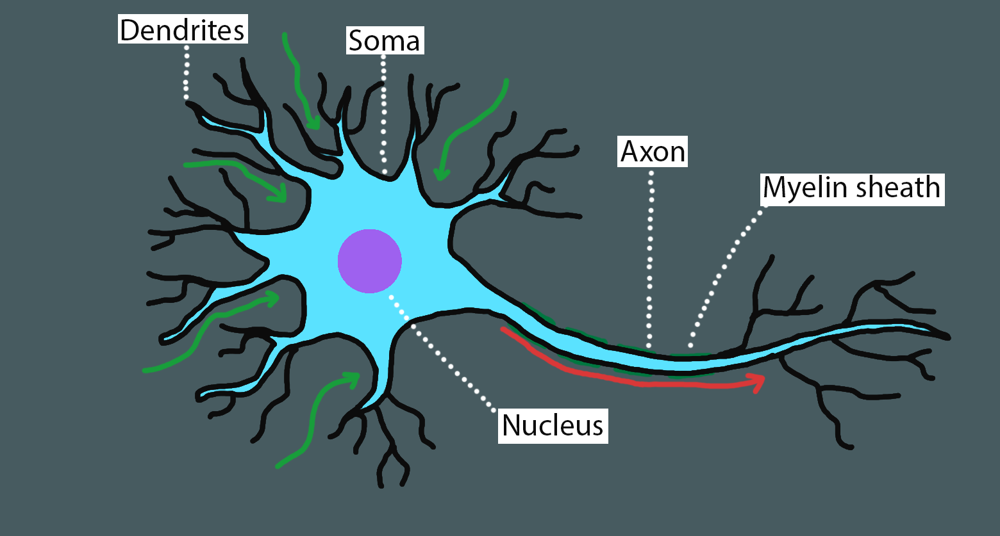

Posts
Week 10: Testing
Some general stuff
Web stuff
I’ve been working on doing some small changes to the webpage. It now has some more progress bars that have the current progresses of the things I need to do. I have weighted the NST, CNN and Report to be five times as important as the other ones, and that is reflected in the overall project progress
I have also added a dropdown bar on the posts on the nav-bar to make it easier to navigate the site. This makes it so that you can jump to any week you want with the top menu. This is something I wanted to add way in the start but I just never got around to it.
I have also updated the RSS, which I seem to forget to update all the time. I have also done some small changes here and there to make navigation a bit easier and generally reading the blog more intuitive.
Automated testing
The last day and a half I’ve been working on automated testing for certain parts of the program. As TensorFlow and neural networks has some inherent randomness to them, certain parts are not possible to test to a very fine degree and so I have elected to ignore them for now. The tests I currently have are on my image augmentation object and my loading object.
Certain parts of the testing went pretty well, as soon as I started to understand how to do it. I am used to java, and so I am used to everything being a pointer, however in OpenCV, which compiles to C++, I sometimes ends up with pointers to the address of the object and so when I sent an image to a function and saved it, it actually changed the original image. So I had to take a copy of the image before I did any changes to it in the function.
However now I have 13 tests and they are all successful. I will add some more in the future, regarding the NST and maybe some other ones too but for now I am done with testing. The 13 tests I have are:
Testing the bright blur, affine transform, darken, brighten, blur, sharpen, rotate, crop and mirror in the image augmentation library. These were the ones that took the longest as the changes to the images that I previously mentioned made it so that the images weren’t the same. Also in the augmentation library I tested the iteration function.
Testing the one hot encoding, data loading and next batch functions in the data object, and though I had some trouble with how the data came out in the start, I quickly fixed it and this was a pretty easy task.
What needs to be done
I need to start working on the NST however, I wanted to finish the small stuff first, so I could concentrate on doing what needs to be done without any distractions. I’ve dedicated today and tomorrow to fix the small stuff, however I think I might be able to start working on the NST tomorrow.
When I am done with the NST, depending on how much time there is left I might need to directly start working on the report however, I still want to make the CNN work with color images and make the classification program more intuitive, where it can take more than one image at a time, and also have the resize and recolor stuff incorporated.
I also want to experiment with using multiple augmented versions of one image to classify if that image is of a specific type. Say you have an image of a cat, you put it into the system, it augments it 40 times and out of those 40 examples 33 might say random and 7 might say painting, which gives you an accuracy of 82.5% which you can then use to say that you are 82.5% sure that the image is of that type.
I still have a lot to do on my report, both in terms of data collection and writing, but I have to finish the bulk of the program before I can start collecting the data. This is why I am prioritizing the NST for now, and hopefully I’ll be able to finish it rapidly and thus have a good while to finish collecting data and writing the rapport.
The hand in date is getting close very fast now, so I got to get moving!
I’ve been working on doing some small changes to the webpage. It now has some more progress bars that have the current progresses of the things I need to do. I have weighted the NST, CNN and Report to be five times as important as the other ones, and that is reflected in the overall project progress
I have also added a dropdown bar on the posts on the nav-bar to make it easier to navigate the site. This makes it so that you can jump to any week you want with the top menu. This is something I wanted to add way in the start but I just never got around to it.
I have also updated the RSS, which I seem to forget to update all the time. I have also done some small changes here and there to make navigation a bit easier and generally reading the blog more intuitive.
Automated testing
The last day and a half I’ve been working on automated testing for certain parts of the program. As TensorFlow and neural networks has some inherent randomness to them, certain parts are not possible to test to a very fine degree and so I have elected to ignore them for now. The tests I currently have are on my image augmentation object and my loading object.
Certain parts of the testing went pretty well, as soon as I started to understand how to do it. I am used to java, and so I am used to everything being a pointer, however in OpenCV, which compiles to C++, I sometimes ends up with pointers to the address of the object and so when I sent an image to a function and saved it, it actually changed the original image. So I had to take a copy of the image before I did any changes to it in the function.
However now I have 13 tests and they are all successful. I will add some more in the future, regarding the NST and maybe some other ones too but for now I am done with testing. The 13 tests I have are:
Testing the bright blur, affine transform, darken, brighten, blur, sharpen, rotate, crop and mirror in the image augmentation library. These were the ones that took the longest as the changes to the images that I previously mentioned made it so that the images weren’t the same. Also in the augmentation library I tested the iteration function.
Testing the one hot encoding, data loading and next batch functions in the data object, and though I had some trouble with how the data came out in the start, I quickly fixed it and this was a pretty easy task.
What needs to be done
I need to start working on the NST however, I wanted to finish the small stuff first, so I could concentrate on doing what needs to be done without any distractions. I’ve dedicated today and tomorrow to fix the small stuff, however I think I might be able to start working on the NST tomorrow.
When I am done with the NST, depending on how much time there is left I might need to directly start working on the report however, I still want to make the CNN work with color images and make the classification program more intuitive, where it can take more than one image at a time, and also have the resize and recolor stuff incorporated.
I also want to experiment with using multiple augmented versions of one image to classify if that image is of a specific type. Say you have an image of a cat, you put it into the system, it augments it 40 times and out of those 40 examples 33 might say random and 7 might say painting, which gives you an accuracy of 82.5% which you can then use to say that you are 82.5% sure that the image is of that type.
I still have a lot to do on my report, both in terms of data collection and writing, but I have to finish the bulk of the program before I can start collecting the data. This is why I am prioritizing the NST for now, and hopefully I’ll be able to finish it rapidly and thus have a good while to finish collecting data and writing the rapport.
The hand in date is getting close very fast now, so I got to get moving!
Week 10: Augmentations
Let’s pretend I have a blog post for week 7, 8 and 9 as well
Augmentations: I have become Photoshop
This week I’ve been working on augmenting images so that I can have 1 image and make that image into maybe 40 images that look the much the same but are slightly different. This makes it so if I have 200 images to test, train and validate with, I can then have 8000 images to work with. This is one of the things that is used a lot within machine learning to make your dataset larger.
I started out by making each of the image augmentations and testing it on one image. After that I made a function to take one image as output and have 39 slightly changed images. I then started to implement this into the CNN and when I finished that I quickly realized that I should have resized the images and then done the augmentations, rather than the other way around.
I currently am making 40 images out of each input image, including the original image and I could easily double that by taking the mirrored image and pass that into the augmentation function. Right now, I am only getting one mirrored image, and that might change in the future.
I also spent an hour or two trying to figure out why at seemingly random points my program would just up and crash. It seemed that it was due to an image that was corrupted, and thus it could not be read. When I finally figured that out I started to implement it into the loading system. This was a 3-step job.
I thought had to redo the way I loaded the images, and spent quite a few hours working on implementing it. When I finally came to a point where it worked on the part of the CNN I ran the rest of the program and hit a wall. I had changed the structure of the way the images was loaded and for the life of me I couldn’t figure it out
I reverted to before I changed the loading and started over, however this time, I kept the bulk of the loading function and did the augmentation and loading separate. I now am able to start by preparing the images by augmenting them into a subfolder, and then I load them separately from that folder. This means that the augmentation part now handles the resizing and color changes of the images and thus I am able to run the program using any .png, .jpeg or .jpg image. (though more can be added)
Here we can see the program running:
Here is some examples of what image augmentations can look like
I started out by making each of the image augmentations and testing it on one image. After that I made a function to take one image as output and have 39 slightly changed images. I then started to implement this into the CNN and when I finished that I quickly realized that I should have resized the images and then done the augmentations, rather than the other way around.
I currently am making 40 images out of each input image, including the original image and I could easily double that by taking the mirrored image and pass that into the augmentation function. Right now, I am only getting one mirrored image, and that might change in the future.
I also spent an hour or two trying to figure out why at seemingly random points my program would just up and crash. It seemed that it was due to an image that was corrupted, and thus it could not be read. When I finally figured that out I started to implement it into the loading system. This was a 3-step job.
I thought had to redo the way I loaded the images, and spent quite a few hours working on implementing it. When I finally came to a point where it worked on the part of the CNN I ran the rest of the program and hit a wall. I had changed the structure of the way the images was loaded and for the life of me I couldn’t figure it out
I reverted to before I changed the loading and started over, however this time, I kept the bulk of the loading function and did the augmentation and loading separate. I now am able to start by preparing the images by augmenting them into a subfolder, and then I load them separately from that folder. This means that the augmentation part now handles the resizing and color changes of the images and thus I am able to run the program using any .png, .jpeg or .jpg image. (though more can be added)
Everything Explained
How do our nogin work?
Disclaimer: In this section I’m going to try to explain how neurons work as best as I can, however, I am not a neural scientist not a doctor, so I might be wrong or misleading at parts. This might also be based on outdated knowledge.
Neuron

The neuron is the most important cell we have in our body and the network of them is what makes our mind. Most of our neural cells are structured as the on in the image above, however there are other structures too, however for the sake of understanding this we only need to know about the most common one.
The neurons body is called the Soma and contains a liquid called the cytoplasm, within the cytoplasm resides the mitochondria and the nucleus. The mitochondria is the powerhouse of the cell and the nucleus is where processing is done and where the DNA is replicated. The short root like structures on the cell is called dendrites and the longer one that looks a bit like a tail is called a axon. The dendrites are what connects the soma of the neuron to other cells and is where the cell receives its inputs from. The axon, contrary to the dendrites is what outputs the information and is what connects the neuron to other neurons dendrites. One neuron is usually connected to many neurons both in terms of output and input.
When the dendrites get input from the neurons or other sensory cells, the neuron processes that data in the nucleus through a process called action potential (More info on this in the next paragraph). If the data gets actuated it gets sent onwards down the axon as an electrical signal to a set of other neurons. Where the axon of one neuron and the dendrites of others interconnect, which is where the axon on one neuron and the dendrites of another nearly touch. The sender opens its cell walls and release some chemicals in the form of sodium and potassium ions which gets transmitted in the synaptic gap, and the receiver then opens its cell walls to then receive these ions..
The gap in the synapse, or the synaptic cleft, is around 20-40 Nano-meters and it takes less than a milli-second for neuro transmitters to pass the synaptic divide. When the neuro transmitters have passed the synaptic divide, they deposit into the receptor sites on the dendrites of the receiving neuron where they either exits or inhibits the dendrites of the neuron. However, the neuro transmitters that pass the synaptic divide does not get absorbed by the receiving neuron, after they have been put into the receptor sites, they get reabsorbed by the transmitting neuron in a process called reuptake. .
The whole process from the start of action potential to end of reuptake takes less than 1ms and the neuron is then ready to transmit again leading to the ability to fire a neuron over 100 times a second. However, the time can vary as the axon on some neural cells have a insulative fatty sheath called the myelin sheath that helps send the signals faster.
So, to sum up: When one of your neurons gets triggered, either by other neurons or sensory cells the signal enters the dendrites of the neuron. The dendrites send the signal into the nucleus where the information is processed via an action potential, which determines whether or not to send a signal onwards. If a signal is sent, it travels down the axon, which might or might not be insulated in a myelin sheath to help transfer data faster and enters the synaptic gap. In the synaptic gap the cell walls of the sending neuron releases some neuro transmitters that traverse the gap and gets deposited on the receptor sites of the receiving neuron. These neuro transmitters will then either excite or inhibits the dendrites of the receiving neuron. After this, the neuro transmitters get reabsorbed into the sending neuron and the process is ready to restart.
Action Potential
The famous 1997 movie Men In Black, Kay, portrayed by Tommy Lee Jones’s, says “A person is smart. People are dumb ...”. For your neurons the opposite is true. One neuron can do very little, and even a string of neurons connected to another neuron won’t do you any good. The strength of the neurons come interconnected in numbers. The reason why a simple process can be so good, is that that process receives and sends inputs to many other of the same processes. It’s heavy parallel processing and it is greatly beneficial.
One neuron in itself can only send a signal with one speed and strength, so how can we get complex thoughts and feelings from these binary actions? What can vary is how often, or the frequency of, the signals that gets transmitted. The network of neurons that is your brain can then organize the signals using location, sensation, magnitude and importance. And all that together with the fact that we have around 80 billion neurons in our body makes us able to make complex decisions like what to wear on your first date or to research how neurons and our brain works. So, with all that said, how does the neurons decision making process work and why can we get so complex data out of these ‘dumb’ neurons?
Well the way the neuron makes its decisions works on electricity so before we continue I will explain a few things about electricity. A battery works by having a negative charge and a positive charge with a separative membrane or wall between the two charges, you have a potential difference, or a difference of electrical charge, between the two sides. Our neurons also have the same structure of a negative and a positive side with a separative membrane between the two. This causes our brain to work a bit like a massive collection of batteries. Each neuron has an interior voltage of around -70mV and the outside is around +70mV.
The neuron uses something called ion channels to change this. An ion channel is a bit like a gate that, based on exterior factors, can open and close to let through electrical charge. This means that the voltage potential between inside and outside can be changed by opening these gates. There are also gates that only lets through the positively charged chemicals that are on the inside of the soma, so the neuron can re-balance its voltages. The ion gates are divided into three different types. Most are Voltage-gated channels however, there are also the Ligand-gated and Mechanically-gated channels.
Voltage-gated channels open and close in response to changes in the potential difference in the membrane. Ligand-gated open and close in response to chemical stimuli such as hormones or serotonin. The last one is Mechanically-gated channels and they respond to stimuli from physical stretching of the membrane of the cell wall.
When the ion channels get triggered by some event, the voltage will increase and at exactly -55mV on the inside of the neuron, the Voltage-Gated ion channels open. There are a lot of the Voltage-Gated channels which lets through massive amounts of positively charged sodium which then in turn makes the inside even more positive, as far as up to +40mV. This creates a massive spike in the electrical charge on the inside of the neuron which gets transferred along the axon of the neuron and triggers the neuro transmitters to travel across the synapse. However, this only happens if the threshold reaches -55mV or above. -56mV will not trigger this event and thus this is completely binary.
So, as you can see on the graph in the blue zone, the voltage slowly rises to -55mV. In the green zone it opens the ion channels when it reaches -55mV and the rise in voltage is nearly instantiations. In the yellow zone the neuron starts to re-normalize and the voltages start to drop back towards the normal state of -77mV.

What makes the voltages increase in the first place is the triggers that it gets from the other neurons connected to its dendrites. I mentioned that neural transmitters get deposited in the receptor sites on the receiving neuron and they either excite or inhibit the dendrites. When they excite they lower the inside voltage of the neuron and if they inhibit they will increase it. If exited enough times, it will reach the action potential, and only when the action potential is triggered, will the neuron sends it’s signals on to the next one.
The neurons body is called the Soma and contains a liquid called the cytoplasm, within the cytoplasm resides the mitochondria and the nucleus. The mitochondria is the powerhouse of the cell and the nucleus is where processing is done and where the DNA is replicated. The short root like structures on the cell is called dendrites and the longer one that looks a bit like a tail is called a axon. The dendrites are what connects the soma of the neuron to other cells and is where the cell receives its inputs from. The axon, contrary to the dendrites is what outputs the information and is what connects the neuron to other neurons dendrites. One neuron is usually connected to many neurons both in terms of output and input.
When the dendrites get input from the neurons or other sensory cells, the neuron processes that data in the nucleus through a process called action potential (More info on this in the next paragraph). If the data gets actuated it gets sent onwards down the axon as an electrical signal to a set of other neurons. Where the axon of one neuron and the dendrites of others interconnect, which is where the axon on one neuron and the dendrites of another nearly touch. The sender opens its cell walls and release some chemicals in the form of sodium and potassium ions which gets transmitted in the synaptic gap, and the receiver then opens its cell walls to then receive these ions..
The gap in the synapse, or the synaptic cleft, is around 20-40 Nano-meters and it takes less than a milli-second for neuro transmitters to pass the synaptic divide. When the neuro transmitters have passed the synaptic divide, they deposit into the receptor sites on the dendrites of the receiving neuron where they either exits or inhibits the dendrites of the neuron. However, the neuro transmitters that pass the synaptic divide does not get absorbed by the receiving neuron, after they have been put into the receptor sites, they get reabsorbed by the transmitting neuron in a process called reuptake. .
The whole process from the start of action potential to end of reuptake takes less than 1ms and the neuron is then ready to transmit again leading to the ability to fire a neuron over 100 times a second. However, the time can vary as the axon on some neural cells have a insulative fatty sheath called the myelin sheath that helps send the signals faster.
So, to sum up: When one of your neurons gets triggered, either by other neurons or sensory cells the signal enters the dendrites of the neuron. The dendrites send the signal into the nucleus where the information is processed via an action potential, which determines whether or not to send a signal onwards. If a signal is sent, it travels down the axon, which might or might not be insulated in a myelin sheath to help transfer data faster and enters the synaptic gap. In the synaptic gap the cell walls of the sending neuron releases some neuro transmitters that traverse the gap and gets deposited on the receptor sites of the receiving neuron. These neuro transmitters will then either excite or inhibits the dendrites of the receiving neuron. After this, the neuro transmitters get reabsorbed into the sending neuron and the process is ready to restart.
One neuron in itself can only send a signal with one speed and strength, so how can we get complex thoughts and feelings from these binary actions? What can vary is how often, or the frequency of, the signals that gets transmitted. The network of neurons that is your brain can then organize the signals using location, sensation, magnitude and importance. And all that together with the fact that we have around 80 billion neurons in our body makes us able to make complex decisions like what to wear on your first date or to research how neurons and our brain works. So, with all that said, how does the neurons decision making process work and why can we get so complex data out of these ‘dumb’ neurons?
Well the way the neuron makes its decisions works on electricity so before we continue I will explain a few things about electricity. A battery works by having a negative charge and a positive charge with a separative membrane or wall between the two charges, you have a potential difference, or a difference of electrical charge, between the two sides. Our neurons also have the same structure of a negative and a positive side with a separative membrane between the two. This causes our brain to work a bit like a massive collection of batteries. Each neuron has an interior voltage of around -70mV and the outside is around +70mV.
The neuron uses something called ion channels to change this. An ion channel is a bit like a gate that, based on exterior factors, can open and close to let through electrical charge. This means that the voltage potential between inside and outside can be changed by opening these gates. There are also gates that only lets through the positively charged chemicals that are on the inside of the soma, so the neuron can re-balance its voltages. The ion gates are divided into three different types. Most are Voltage-gated channels however, there are also the Ligand-gated and Mechanically-gated channels.
Voltage-gated channels open and close in response to changes in the potential difference in the membrane. Ligand-gated open and close in response to chemical stimuli such as hormones or serotonin. The last one is Mechanically-gated channels and they respond to stimuli from physical stretching of the membrane of the cell wall.
When the ion channels get triggered by some event, the voltage will increase and at exactly -55mV on the inside of the neuron, the Voltage-Gated ion channels open. There are a lot of the Voltage-Gated channels which lets through massive amounts of positively charged sodium which then in turn makes the inside even more positive, as far as up to +40mV. This creates a massive spike in the electrical charge on the inside of the neuron which gets transferred along the axon of the neuron and triggers the neuro transmitters to travel across the synapse. However, this only happens if the threshold reaches -55mV or above. -56mV will not trigger this event and thus this is completely binary.
So, as you can see on the graph in the blue zone, the voltage slowly rises to -55mV. In the green zone it opens the ion channels when it reaches -55mV and the rise in voltage is nearly instantiations. In the yellow zone the neuron starts to re-normalize and the voltages start to drop back towards the normal state of -77mV.
Our Visual System

Each human eye is monocular and as we have two of them we have binocular vision. Some animals such as the mantis shrimp have trinocular eyeballs and they have two of them making a hexnocular vision system. Eyes use a lot of energy which is most likely why we have not evolved to have hexnocular vision. However, the binocular vision we do have helps us with things like depth of field, field of view, and hiding errors in our eyes. Not to mention that you can lose one eye, and still have vision.
The eye is a complex structure that contains the main bulk of the bodies sensory neurons, around 70% of them and around half of our brain is devoted to vision. The outside layer of the eye is the sclera and is maintains the structure of the eye. Attached to the sclera is a set of muscles that control the eye movement. The choroid is the middle layer of the eye and contains the blood vessels to circulate and deliver blood. The pupil is the opening in the eye and is situated behind the cornea and in the middle of the iris. The cornea is a clear circular area which lets light enter the eye. The iris is a smooth muscle that surrounds the pupil. It adjusts the size of the opening, or the aperture, of the pupil, to let an appropriate amount of light in. Too much light will damage the eye and too little and you will have trouble detecting what is what.
The lens is a flexible structure that changes the focus of the light that comes trough the pupil and focuses it on the photoreceptor cells. The retina contains the photoreceptor cells and they are divided into rods and cones. Rods are sensitive to light but not to color, while cones are sensitive to color. Rods and cones convert light energy into nerve impulses that the brain can understand and sends the information to our brain via synapses.
The information that the rods and cones pick up gets sent down the optic nerve, but not before they get pre-processed in the retina. They pass through two layers of neural cells that help with detecting low level features such as edges and shadows. When the signals leave the retina they travel down the optic nerve and into the optic tract which crosses the signals such that the vision from the left side of the retina in both eyes gets sent to the right side, and vice versa.

After that the next stop is the Lateral Geniculate Nucleus (LGN) which is divided into 6 layers and pre-processes the vision information even more. The first and second layer of the LGN is slightly different than the last 4. Layers 1 and 2 are responsive to movement and gets its input from the rods. Layers 3-6 gets its inputs from the cones and are responsive to color, fine patterns or details and stationary or slow-moving objects. From the LGN the signals then move onwards to the visual cortex.
The eye is a complex structure that contains the main bulk of the bodies sensory neurons, around 70% of them and around half of our brain is devoted to vision. The outside layer of the eye is the sclera and is maintains the structure of the eye. Attached to the sclera is a set of muscles that control the eye movement. The choroid is the middle layer of the eye and contains the blood vessels to circulate and deliver blood. The pupil is the opening in the eye and is situated behind the cornea and in the middle of the iris. The cornea is a clear circular area which lets light enter the eye. The iris is a smooth muscle that surrounds the pupil. It adjusts the size of the opening, or the aperture, of the pupil, to let an appropriate amount of light in. Too much light will damage the eye and too little and you will have trouble detecting what is what.
The lens is a flexible structure that changes the focus of the light that comes trough the pupil and focuses it on the photoreceptor cells. The retina contains the photoreceptor cells and they are divided into rods and cones. Rods are sensitive to light but not to color, while cones are sensitive to color. Rods and cones convert light energy into nerve impulses that the brain can understand and sends the information to our brain via synapses.
The information that the rods and cones pick up gets sent down the optic nerve, but not before they get pre-processed in the retina. They pass through two layers of neural cells that help with detecting low level features such as edges and shadows. When the signals leave the retina they travel down the optic nerve and into the optic tract which crosses the signals such that the vision from the left side of the retina in both eyes gets sent to the right side, and vice versa.
Neural Networks
Neural networks have its beginnings in the forties when people started to realize the similarities between our brain and a computer. Most of the experiments back then, were not very successful due to too little power and it’s only in the last few recent years that they have truly taken off.

A neural network is divided into layers, and each layer has a set of neurons or nodes. All the nodes in the network works by emulating a biological neuron, and the weights between them the axons and dendrites. The connection of them in a network with interconnected layers is what makes neural networks so good.
Here I will explain the most common version of neural networks called feedforward networks. In this type of network, and in this type of network the information goes from left to right. The network is divided into 3 layer types, input layer, hidden layer and output layer. The input layers take inputs from some source such as an image or text that has been converted to numbers. The input layer feeds into the hidden layers though weighted connections. It’s these weights that are responsible for the network being able to learn. When the signals have passed through all the layers in the hidden layers, they are then deposited in the output layer. The output layer is the last layer of the network and each node in the output layer is correlated to one of the classes you are trying to detect.
In the hidden layer, when the information flow from neuron through neuron they pass through the weights, all information are numbers and the weights are also numbers. Each time a node sends a signal through a weight, it gets multiplied by the value of the weight. As example, you can send 0.7 though a weight of 0.9 and get 0.63 or send it through a weight of 0.2 and get a weight of 0.14. The numbers that gets sent to one node then gets added up, and if the sum is greater than the action potential threshold, the neuron will then send its information onwards. This means that the weights of the neurons are important for weather or not a neuron will fire.
Lastly in the output layer, you are trying to get a classification out of the network. So, if you are making a network to detect animals in a picture, each of the output nodes would then be one of those animals. The output layer will then calculate the chance of each of the classes. So if you have an output layer with cat, dog, fish, lion and whale and you input a cat you might get a feedback that looks something like this:
[cat, dog, fish, lion, whale]
[0.781, 0.027. 0.001. 0.210 0.001]
This means that the network would, with a 78.1% certainty, think the image was a cat. It would also be 19% sure it was a lion and 2.7% sure it was a dog. For fish and whale, it would be 0.01% sure it was either one or 99.9% sure it wasn’t.
When you are working with neural networks there are thee faces. The training, validation and testing face. In the training face the network will give all the weights a random number and try to get a better classification by using data that has already been classified. This means an untrained network is no better than guessing and so training the network is key for performance.
The way that the network then learns is using something called backpropagation. Where it looks at the expected output, aka the pre-classified data and the actual output and using the difference between what the network should have output to what it did output, it updates the weights. It modifies the weights of the connections between the neurons by working from the output towards the input. This reduces the difference between the intended output and the actual output and the network will in that sense learn.
Here I will explain the most common version of neural networks called feedforward networks. In this type of network, and in this type of network the information goes from left to right. The network is divided into 3 layer types, input layer, hidden layer and output layer. The input layers take inputs from some source such as an image or text that has been converted to numbers. The input layer feeds into the hidden layers though weighted connections. It’s these weights that are responsible for the network being able to learn. When the signals have passed through all the layers in the hidden layers, they are then deposited in the output layer. The output layer is the last layer of the network and each node in the output layer is correlated to one of the classes you are trying to detect.
In the hidden layer, when the information flow from neuron through neuron they pass through the weights, all information are numbers and the weights are also numbers. Each time a node sends a signal through a weight, it gets multiplied by the value of the weight. As example, you can send 0.7 though a weight of 0.9 and get 0.63 or send it through a weight of 0.2 and get a weight of 0.14. The numbers that gets sent to one node then gets added up, and if the sum is greater than the action potential threshold, the neuron will then send its information onwards. This means that the weights of the neurons are important for weather or not a neuron will fire.
Lastly in the output layer, you are trying to get a classification out of the network. So, if you are making a network to detect animals in a picture, each of the output nodes would then be one of those animals. The output layer will then calculate the chance of each of the classes. So if you have an output layer with cat, dog, fish, lion and whale and you input a cat you might get a feedback that looks something like this:
[cat, dog, fish, lion, whale]
[0.781, 0.027. 0.001. 0.210 0.001]
This means that the network would, with a 78.1% certainty, think the image was a cat. It would also be 19% sure it was a lion and 2.7% sure it was a dog. For fish and whale, it would be 0.01% sure it was either one or 99.9% sure it wasn’t.
When you are working with neural networks there are thee faces. The training, validation and testing face. In the training face the network will give all the weights a random number and try to get a better classification by using data that has already been classified. This means an untrained network is no better than guessing and so training the network is key for performance.
The way that the network then learns is using something called backpropagation. Where it looks at the expected output, aka the pre-classified data and the actual output and using the difference between what the network should have output to what it did output, it updates the weights. It modifies the weights of the connections between the neurons by working from the output towards the input. This reduces the difference between the intended output and the actual output and the network will in that sense learn.
Convolutional Neural Networks
A convolutional neural network(CNN) is a type of neural network designed to mimic the way we handle vision data. But before I can get into the details of how CNNs work I need to get everyone on common ground, so I will explain a few simple things such as how pictures work in computers and what convolutions are.
A picture in a computer is just a bunch of number values and each number represent a gradient of a color. In a greyscale image the numbers are in a matrix and range from 0 to 255 where 0 is black and 255 is white. In a Red Green Blue (RGB) image the numbers are stored in three matrices, one for red, one for green and one for blue and again the values range from 0 to 255. So, a pixel in a RGB image will have 3 values, [X, Y, Z] and these represent the colors. A pixel with the value [255, 255, 255] would be white, a pixel with the value [0, 255, 0] would be green and a pixel with the value of [127, 127, 127] would be grey.
Convolutions is a part of computer vision and often used to detect edges and low-level features, sharpening and blurring. It is referred to as a convolution, filter, mask or kernel. The filter is quite similar to an image, in the terms that it too is a matrix, it is usually quite a bit smaller than the image itself. A normal use for filters are blur filters. An example of a blur filter is:
[1, 1, 1]
[1, 1, 1]
[1, 1, 1]
So, let’s say we have an image, that looks like this:
[100, 100, 200, 200]
[100, 100, 200, 200]
[100, 100, 200, 200]
[100, 100, 200, 200]
You then take the filter and pass it over the image, and you time the values in the filter by the values in the image and then add them together, so if we start in the top left corner of the image we would take
(1*100) +(1*100) + (1*200) +
(1*100) + (1*100) + (1*200) +
(1*100) + (1*100) + (1*200)
= 133
This means that the pixel in the middle of our filter will change to 0.
[100, 100, 200, 200]
[100, 133, 200, 200]
[100, 100, 200, 200]
[100, 100, 200, 200]
And when you apply this to the entire image it will look like this (assuming that the values outside the image boundaries are the same as the one on the inside):
[100, 133, 167, 200]
[100, 133, 167, 200]
[100, 133, 167, 200]
[100, 133, 167, 200]
By this you have blurred the sharp line that would be created by jumping from 100 to 200 by gradually going up by steps of 33.
It’s the use of these filters that the network differentiates itself from normal neural networks. This filters are often the first few layers of the network and will work to highlight low level features such as edges and shadows.
In the section where I talked about vision, I mentioned that in the retina the image data our eyes pick up gets pre-processed in two layers where they low level features. This is the same thing the CNNs does in the first layers by using convolutions. What is interesting is then by using these techniques the system arranges itself in such a way that in the deeper layers of the network the higher-level features gets visible.

In this image set, the furthest left one, is the data from the filters in the first few layers, the middle one is from a layer inside the network and the left one is one of the last layers. Here you can clearly see that the further into the network you get the more high-level features it detects. This is a testament to how accurate our understanding of the human brain is.
A picture in a computer is just a bunch of number values and each number represent a gradient of a color. In a greyscale image the numbers are in a matrix and range from 0 to 255 where 0 is black and 255 is white. In a Red Green Blue (RGB) image the numbers are stored in three matrices, one for red, one for green and one for blue and again the values range from 0 to 255. So, a pixel in a RGB image will have 3 values, [X, Y, Z] and these represent the colors. A pixel with the value [255, 255, 255] would be white, a pixel with the value [0, 255, 0] would be green and a pixel with the value of [127, 127, 127] would be grey.
Convolutions is a part of computer vision and often used to detect edges and low-level features, sharpening and blurring. It is referred to as a convolution, filter, mask or kernel. The filter is quite similar to an image, in the terms that it too is a matrix, it is usually quite a bit smaller than the image itself. A normal use for filters are blur filters. An example of a blur filter is:
[1, 1, 1]
[1, 1, 1]
[1, 1, 1]
So, let’s say we have an image, that looks like this:
[100, 100, 200, 200]
[100, 100, 200, 200]
[100, 100, 200, 200]
[100, 100, 200, 200]
You then take the filter and pass it over the image, and you time the values in the filter by the values in the image and then add them together, so if we start in the top left corner of the image we would take
(1*100) +(1*100) + (1*200) +
(1*100) + (1*100) + (1*200) +
(1*100) + (1*100) + (1*200)
= 133
This means that the pixel in the middle of our filter will change to 0.
[100, 100, 200, 200]
[100, 133, 200, 200]
[100, 100, 200, 200]
[100, 100, 200, 200]
And when you apply this to the entire image it will look like this (assuming that the values outside the image boundaries are the same as the one on the inside):
[100, 133, 167, 200]
[100, 133, 167, 200]
[100, 133, 167, 200]
[100, 133, 167, 200]
By this you have blurred the sharp line that would be created by jumping from 100 to 200 by gradually going up by steps of 33.
It’s the use of these filters that the network differentiates itself from normal neural networks. This filters are often the first few layers of the network and will work to highlight low level features such as edges and shadows.
In the section where I talked about vision, I mentioned that in the retina the image data our eyes pick up gets pre-processed in two layers where they low level features. This is the same thing the CNNs does in the first layers by using convolutions. What is interesting is then by using these techniques the system arranges itself in such a way that in the deeper layers of the network the higher-level features gets visible.
Neural Style Transfer
Neural Style transfer has two images. A style image and a content image. From these we need to extract the style from the style image and apply it to the content image. Usually you would use a pretrained network using a large dataset such as the VGG-16 (or 19) or googles deep dream dataset.
In the last section I talked about CNNs and how they develop a hierarchical representation of features which we will use to get the style out of the style image. When we then combine our style and our content we start with a blank image. Dependent on what network you are using you either start with a black, white, gray or randomly colored image. But more often than not it is gray.
Remember in the neural network how we changed the weights based while we were training our data? In neural style transfer you keep the weights constant but you change image instead. This leads to the image slowly getting more and more similar to the content image but with the style of the style image.
This is being done with something called a cost function. When you change the pixels in each iteration you are trying to satisfy a cost function by slightly changing the cost function. The cost function has two sub functions, a style loss function and a content loss function. Both the content loss and the style loss are mathematical functions.
The content loss function in each layer is the Euclidean distance between the activations of the content image and the output image. In mathematics the Euclidean distance is the straight distance between two points. Remember the hierarchical representations of features? They are important for this. This is all based on the assumption that images with similar content will have the same higher layer representations in the network.
The style loss, much like the content loss, is also based on the hierarchical representations of the features but this time in the lower levels of the network. This function is is slightly more complicated than the content loss. And usually uses something called gram matrix, however other statistics such as mean can be used too.
The style loss is calculated by getting the correlation between the activations in the feature maps of the layers some statistical method such as a gram matrix and this turns out to be a rather good representation of the style features in the image.
When we have the losses calculated we use this to go over the image and minimize the loss by tweaking the pixels in the image to satisfy the loss functions. Doing this iteratively many times will result in an image that starts out grey but slowly works its way to a mix of the two images.
In the last section I talked about CNNs and how they develop a hierarchical representation of features which we will use to get the style out of the style image. When we then combine our style and our content we start with a blank image. Dependent on what network you are using you either start with a black, white, gray or randomly colored image. But more often than not it is gray.
Remember in the neural network how we changed the weights based while we were training our data? In neural style transfer you keep the weights constant but you change image instead. This leads to the image slowly getting more and more similar to the content image but with the style of the style image.
This is being done with something called a cost function. When you change the pixels in each iteration you are trying to satisfy a cost function by slightly changing the cost function. The cost function has two sub functions, a style loss function and a content loss function. Both the content loss and the style loss are mathematical functions.
The style loss, much like the content loss, is also based on the hierarchical representations of the features but this time in the lower levels of the network. This function is is slightly more complicated than the content loss. And usually uses something called gram matrix, however other statistics such as mean can be used too.
The style loss is calculated by getting the correlation between the activations in the feature maps of the layers some statistical method such as a gram matrix and this turns out to be a rather good representation of the style features in the image.
When we have the losses calculated we use this to go over the image and minimize the loss by tweaking the pixels in the image to satisfy the loss functions. Doing this iteratively many times will result in an image that starts out grey but slowly works its way to a mix of the two images.
Sources
[1] Ryan Jones [14/12/12]. Brain Battery [Online]. Downloaded: [04/04/18]. Available: Link
[2] Students of Glenn Elert [N/A]. Power Of A Human Brain [Online]. Downloaded: [04/04/18]. Available: Link
[3] CrashCourse [02/03/15]. The Nervous System, Part 2 - Action! Potential!: Crash Course A&P #9 [Online]. Downloaded: [04/04/18]. Available: Link
[4] CrashCourse [17/02/14]. The Chemical Mind - Crash Course Psychology #3 [Online]. Downloaded: [04/04/18]. Available: Link
[5] N/A [N/A]. HOW BIG IS A SYNAPSE? [Online]. Downloaded: [04/04/18]. Available: Link
[6] Eric H. Chudler [N/A]. Lights, Camera, Action Potential [Online]. Downloaded: [05/04/18]. Available: Link
[17] Karsten Rippe [29/09/11]. Genome Organization and Function in the Cell Nucleus [Online]. Downloaded: [06/04/18]. Available: Link
[18] Miguel Berrios [01/01/98]. Nuclear Structure and Function [Online]. Downloaded: [06/04/18]. Available: Link
[19] Bruce Alberts [N/A]. Molecular Biology of the Cell [Online]. Downloaded: [06/04/18]. Available: Link
[24] N/A [N/A]. BioNumber Details Page [Online]. Downloaded: [05/04/18]. Available: Link
Visual System
[13] Paul Merritt [28/03/17]. Vision : From Retina to LGN [Online]. Downloaded: [04/04/18]. Available: Link
[14] Handwritten Tutorials [13/08/11]. The Details (Vision 5 of 5) [Online]. Downloaded: [05/04/18]. Available: Link
[15] RobotSpaceBrain [12/06/14]. A Journey Through The Visual System [Online]. Downloaded: [05/04/18]. Available: Link
[16] Hanna Dee [03/09/17]. Human vision - how do we do it [Online]. Downloaded: [05/04/18]. Available: Link
[20] Michael Nielsen [01/12/17]. Using neural nets to recognize handwritten digits [Online]. Downloaded: [06/04/18]. Available: Link
[21] Michael Nielsen [01/12/17]. How the backpropagation algorithm works [Online]. Downloaded: [06/04/18]. Available: Link
[22] Chris Woodford [01/14/18]. Neural networks [Online]. Downloaded: [06/04/18]. Available: Link
[23] N/A [N/A]. NEURAL NETWORKS [Online]. Downloaded: [06/04/18]. Available: Link
[24] N/A [N/A]. BioNumber Details Page [Online]. Downloaded: [05/04/18]. Available: Link
CNNs
[8] Shubham Jha [28/07/17]. A brief introduction to Neural Style Transfer [Online]. Downloaded: [04/04/18]. Available: Link
[9] Gene Kogan [N/A]. Style Transfer [Online]. Downloaded: [05/04/18]. Available: Link
[10] Computerphile [02/09/15]. How Blurs & Filters Work - Computerphile [Online]. Downloaded: [05/04/18]. Available: Link
[11] Victor Powell [29/01/15]. Image Kernels explained visually [Online]. Downloaded: [04/04/18]. Available: Link
[12] ujjwalkarn [11/08/16]. An Intuitive Explanation of Convolutional Neural Networks [Online]. Downloaded: [05/04/18]. Available: Link
NST
[7] Utagawa Kunisada [01/03/1853]. Two Women Carried Across a River by Porters, right sheet of the triptych Illustration of Two-Way Traffic on the Ōi River [Online]. Downloaded: [04/04/18]. Available: Link
[8] Shubham Jha [28/07/17]. A brief introduction to Neural Style Transfer [Online]. Downloaded: [04/04/18]. Available: Link
[9] Gene Kogan [N/A]. Style Transfer [Online]. Downloaded: [05/04/18]. Available: Link
Images
[2] Students of Glenn Elert [N/A]. Power Of A Human Brain [Online]. Downloaded: [04/04/18]. Available: Link
[3] CrashCourse [02/03/15]. The Nervous System, Part 2 - Action! Potential!: Crash Course A&P #9 [Online]. Downloaded: [04/04/18]. Available: Link
[4] CrashCourse [17/02/14]. The Chemical Mind - Crash Course Psychology #3 [Online]. Downloaded: [04/04/18]. Available: Link
[5] N/A [N/A]. HOW BIG IS A SYNAPSE? [Online]. Downloaded: [04/04/18]. Available: Link
[6] Eric H. Chudler [N/A]. Lights, Camera, Action Potential [Online]. Downloaded: [05/04/18]. Available: Link
[17] Karsten Rippe [29/09/11]. Genome Organization and Function in the Cell Nucleus [Online]. Downloaded: [06/04/18]. Available: Link
[18] Miguel Berrios [01/01/98]. Nuclear Structure and Function [Online]. Downloaded: [06/04/18]. Available: Link
[19] Bruce Alberts [N/A]. Molecular Biology of the Cell [Online]. Downloaded: [06/04/18]. Available: Link
[24] N/A [N/A]. BioNumber Details Page [Online]. Downloaded: [05/04/18]. Available: Link
[14] Handwritten Tutorials [13/08/11]. The Details (Vision 5 of 5) [Online]. Downloaded: [05/04/18]. Available: Link
[15] RobotSpaceBrain [12/06/14]. A Journey Through The Visual System [Online]. Downloaded: [05/04/18]. Available: Link
[16] Hanna Dee [03/09/17]. Human vision - how do we do it [Online]. Downloaded: [05/04/18]. Available: Link
[20] Michael Nielsen [01/12/17]. Using neural nets to recognize handwritten digits [Online]. Downloaded: [06/04/18]. Available: Link
[21] Michael Nielsen [01/12/17]. How the backpropagation algorithm works [Online]. Downloaded: [06/04/18]. Available: Link
[22] Chris Woodford [01/14/18]. Neural networks [Online]. Downloaded: [06/04/18]. Available: Link
[23] N/A [N/A]. NEURAL NETWORKS [Online]. Downloaded: [06/04/18]. Available: Link
[24] N/A [N/A]. BioNumber Details Page [Online]. Downloaded: [05/04/18]. Available: Link
[9] Gene Kogan [N/A]. Style Transfer [Online]. Downloaded: [05/04/18]. Available: Link
[10] Computerphile [02/09/15]. How Blurs & Filters Work - Computerphile [Online]. Downloaded: [05/04/18]. Available: Link
[11] Victor Powell [29/01/15]. Image Kernels explained visually [Online]. Downloaded: [04/04/18]. Available: Link
[12] ujjwalkarn [11/08/16]. An Intuitive Explanation of Convolutional Neural Networks [Online]. Downloaded: [05/04/18]. Available: Link
[8] Shubham Jha [28/07/17]. A brief introduction to Neural Style Transfer [Online]. Downloaded: [04/04/18]. Available: Link
[9] Gene Kogan [N/A]. Style Transfer [Online]. Downloaded: [05/04/18]. Available: Link
{kind=link}
Week 6
I did it! Finally, something is working!
Blog/html
I changed the about tab to have a bit more meat on what my project is all about and how it all works. I’ve also made it so that if you go to Kallah.co/#week3 you get moved to week3 and updated the feed.xml to also use this. I’ve also added last week’s post to the RSS feed as for some reason it was missing.
Programming
I finally managed to get TensorFlow to accept my dataset object and thus run the entire program without any crashes. For the first time I ran the network with my own dataset of Kyffin Williams images vs my pictures. I had about 349 where 172 were Kyffin Williams and 175 were my random photographs. The images were divided into 70 test images, 208 training images and 71 validation images. The images were all 100x100 pixels and had no modifications to them. Some time, hopefully this week, I will input the same images again, however I will turn them 90, 180 and 270 degrees so I get all the images in different orientations. This should make the image set larger, and too the computer an image tilted 90 degrees is a vastly different image.
The first results gave me an accuracy of 72.9% on the Test-Set with 1000 iterations. I am not too happy about this accuracy, however that gives me some margin to improve! From the image bellow you can see that the accuracy spikes very quickly on the training set when I print each 100 iterations, and I will probably go more in detail on what happens within each optimization iteration later. However, for now, all I know is that I most likely, with 1000 iterations on only 350 images I am overtraining the network. This can be solved by adding more images to my dataset, which I’d love to, but I’ve been having some trouble getting the rights to publishing the images in my dataset.

The next image is a picture I took of my mum and dad in Macao last year, I have resized it to 100x100 and made it greyscale. The next two images will use this as a baseline.

On this image below, the filter, or neuron, from the first convolution layer of the CNN has been applied to the image. This makes for some pretty psychedelic effects but that’s not the point. What this highlight is what the different filters in this stage are doing too the image to make it more recognizable for the network. If you look at the bottom right image, you can see it’s a pretty good edge detector for humans, and two above that one there’s an all-around detector. What I am guessing is that the bottom right has ended up as a vertical line detector (if you don’t know what that is it’s pretty well explaned here: link) and that the one above is an any line detector.

On the next image, the neuron from the second convolutional layer has been applied to the images and you can see they are becoming less like the image that we recognize and more like a negative or something like that.

Unfortunately, I was unable to screengrab any of the images of the convolutional layers however they look pretty similar to the one below, but the one bellow is from Hvass-Labs (link) where he has trained the network to detect numbers and this is the second convolutional layer from that. In that image the pixels have been assigned to being blue if they have a negative reaction to black pixels and red if they have a positive reaction to black pixels.

In that image we can see some things such as left side 3 down is pretty much a diagonal line detector and same with the bottom second to the left. This, however, doesn’t tell us anything about the data in my network however I will have a more in-depth post about this later. First, I have a demonstration this week to prepare and I also have to make a post about my data object so other people might use it as well
Honorable mentions
I have also remade my github repo and deleted my old one as it was turning into a disorganized mess of conflicting copies and bad file names. I think starting from scratch might have saved me some headache in the future!
I have also moved my data class out of my main program and made it separate file with all the functions related to the data in said file. This has made my program quite a bit more readable and so I have had a lot easier time debugging and hacking away on the TensorFlow stuff
I have also been removing a lot of old print functions, comments and variables that aren’t in use anymore but have still been left in the code. Like a hundred variables called test_something which I’ve been using for testing purposes.
I’ve also been looking at a lot of the TensorFlow source code as I’ve come to the idea that there is no way to understand anything from the official documentation so reading the source code is the best way.
Lastly I think I’ve discontinued Windows 10 support as I am using the scikit-learn package which is apparently really hard to get working with Windows 10, and I’m not about to spend time figuring that out for no real good reason!
The first results gave me an accuracy of 72.9% on the Test-Set with 1000 iterations. I am not too happy about this accuracy, however that gives me some margin to improve! From the image bellow you can see that the accuracy spikes very quickly on the training set when I print each 100 iterations, and I will probably go more in detail on what happens within each optimization iteration later. However, for now, all I know is that I most likely, with 1000 iterations on only 350 images I am overtraining the network. This can be solved by adding more images to my dataset, which I’d love to, but I’ve been having some trouble getting the rights to publishing the images in my dataset.
The next image is a picture I took of my mum and dad in Macao last year, I have resized it to 100x100 and made it greyscale. The next two images will use this as a baseline.
On this image below, the filter, or neuron, from the first convolution layer of the CNN has been applied to the image. This makes for some pretty psychedelic effects but that’s not the point. What this highlight is what the different filters in this stage are doing too the image to make it more recognizable for the network. If you look at the bottom right image, you can see it’s a pretty good edge detector for humans, and two above that one there’s an all-around detector. What I am guessing is that the bottom right has ended up as a vertical line detector (if you don’t know what that is it’s pretty well explaned here: link) and that the one above is an any line detector.
On the next image, the neuron from the second convolutional layer has been applied to the images and you can see they are becoming less like the image that we recognize and more like a negative or something like that.
Unfortunately, I was unable to screengrab any of the images of the convolutional layers however they look pretty similar to the one below, but the one bellow is from Hvass-Labs (link) where he has trained the network to detect numbers and this is the second convolutional layer from that. In that image the pixels have been assigned to being blue if they have a negative reaction to black pixels and red if they have a positive reaction to black pixels.
In that image we can see some things such as left side 3 down is pretty much a diagonal line detector and same with the bottom second to the left. This, however, doesn’t tell us anything about the data in my network however I will have a more in-depth post about this later. First, I have a demonstration this week to prepare and I also have to make a post about my data object so other people might use it as well
I have also moved my data class out of my main program and made it separate file with all the functions related to the data in said file. This has made my program quite a bit more readable and so I have had a lot easier time debugging and hacking away on the TensorFlow stuff
I have also been removing a lot of old print functions, comments and variables that aren’t in use anymore but have still been left in the code. Like a hundred variables called test_something which I’ve been using for testing purposes.
I’ve also been looking at a lot of the TensorFlow source code as I’ve come to the idea that there is no way to understand anything from the official documentation so reading the source code is the best way. Lastly I think I’ve discontinued Windows 10 support as I am using the scikit-learn package which is apparently really hard to get working with Windows 10, and I’m not about to spend time figuring that out for no real good reason!
Week 5
What I have done this week (and a half)
Programming
Last week I worked on trying to implement my dataset as a tfrecord. This is mostly a undocumented thing that is a hell of not enough documentation coupled with ambiguous error messages which is then topped with a file structure that is unreadable to nothing but TF. This makes it so the only way you can make sure your tfrecord is structured correctly is to feed it into a CNN and pray. The problem however occurs if you cannot get the tfrecord to be read by your CNN as this makes it so you have to change your structure, however after about a week of research I have found no way to get the structure of the tfrecord file if you don’t know it beforehand. And as none of the TF objects have a tostring function it you have to guess what the appropriate structure is.
This week I have been working on spoofing a object that is in the tensorflow.contrib.learn.python.learn.datasets.mnist.dataset which is what most the tutorials use. This is a object that would do the same thing as the tfrecord based one, but I have given up on the whole idea of trying to figure them out, as I am starting to feel that will be impossible. This data object is trying to structure the dataset in the same manner as the MNIST dataset as the documentation for this object is rather good as a lot of third party tutorials use MNIST with the TF MNIST object. I have found that quite a bit of the documentation on TF is just a “tensorflow.some_object” that says “this is an object for ‘what_the_name_of_the_object_implies’, more information is found on this link: ‘A collection of objects quite similar to tensorflow.some_object’” and on link 2 it just says “this is an object for ‘doing what the filename implies but worded just slightly differently than on the other page’, which is documented here: “some object”.
I have also found a object that was marked as deprecated on the TF GitHub repo that wasn’t actually deprecated, and I have found object references to objects that doesn’t exist in TF and if that’s not enough I also found a reference to a object that I have been using for a while documenting it in a different way to what I use it, and when I tried it, it gave me errors about things not being the way they told me. All this on the official TensorFlow documentation webpage. A total utter disgrace!
I also met with someone else who does a project quite similar to mine and he said that he had been having the same problems with TF documentation in general and I gave him what I had on tfrecords as most of the tfrecord stuff I have is somewhat usable however from what I can tell impossible to structure correctly.
Documentation
I did my poster but that’s not this subject but here’s a link: 
My plans for this coming week
Programming
Get the CNN working by editing my dataset object, so it works with the TensorFlow Functions. Hopefully, when I bring some of my code to the meeting on Friday the ninth of march I will be able to have one of my errors explained and maybe I will be able to get it working over the weekend. This will be my only goal for this week, however, if I do get it real fast I will start working on optimaizing it with different techniques such as TF settings, image processing and different sizes and colors of the
I have also given up on using scrum and might try to use XP instead, but I have not decided fully yet, as I have been too busy trying to fix the dataset object which is my main holdback at the moment. Scrum is just too team based and I don’t feel like I am getting anything out of using it. However, I’m starting to feel like there is no methodology that is fit for working on a project where you are delving into a undocumented beast and trying to figure out what curse the spell maker cast upon my program by aligning sticks towards north and throwing pebbles in the water. Because right now it feels like it’s more like I am hacking something together than programming. And the problem is, I can’t do anything else as programming requires you to understand what you are doing, and understanding requires someone to tell you how it is done, which usually comes from some documentation which in this case is complete and utter rubbish.
Oh yeah, and maybe getting some documentation done too would be nice, but the main goal is to fix my dataset object.
This week I have been working on spoofing a object that is in the tensorflow.contrib.learn.python.learn.datasets.mnist.dataset which is what most the tutorials use. This is a object that would do the same thing as the tfrecord based one, but I have given up on the whole idea of trying to figure them out, as I am starting to feel that will be impossible. This data object is trying to structure the dataset in the same manner as the MNIST dataset as the documentation for this object is rather good as a lot of third party tutorials use MNIST with the TF MNIST object. I have found that quite a bit of the documentation on TF is just a “tensorflow.some_object” that says “this is an object for ‘what_the_name_of_the_object_implies’, more information is found on this link: ‘A collection of objects quite similar to tensorflow.some_object’” and on link 2 it just says “this is an object for ‘doing what the filename implies but worded just slightly differently than on the other page’, which is documented here: “some object”.
I have also found a object that was marked as deprecated on the TF GitHub repo that wasn’t actually deprecated, and I have found object references to objects that doesn’t exist in TF and if that’s not enough I also found a reference to a object that I have been using for a while documenting it in a different way to what I use it, and when I tried it, it gave me errors about things not being the way they told me. All this on the official TensorFlow documentation webpage. A total utter disgrace!
I also met with someone else who does a project quite similar to mine and he said that he had been having the same problems with TF documentation in general and I gave him what I had on tfrecords as most of the tfrecord stuff I have is somewhat usable however from what I can tell impossible to structure correctly.
I have also given up on using scrum and might try to use XP instead, but I have not decided fully yet, as I have been too busy trying to fix the dataset object which is my main holdback at the moment. Scrum is just too team based and I don’t feel like I am getting anything out of using it. However, I’m starting to feel like there is no methodology that is fit for working on a project where you are delving into a undocumented beast and trying to figure out what curse the spell maker cast upon my program by aligning sticks towards north and throwing pebbles in the water. Because right now it feels like it’s more like I am hacking something together than programming. And the problem is, I can’t do anything else as programming requires you to understand what you are doing, and understanding requires someone to tell you how it is done, which usually comes from some documentation which in this case is complete and utter rubbish.
Oh yeah, and maybe getting some documentation done too would be nice, but the main goal is to fix my dataset object.
Week 4
My plans for this coming week
Blog/html
Change the title from “Something” to “Digital Analysis of Paintings using Tensor Flow”. Fix a problem where the page looks a bit wonky on mobile. Css to change the top image to be centered bottom. I also want to add a progress bar to keep up to date on a per week basis on the webpage.
Programming
This week I aim to finish the resize multiple images script, as I have realized that it crashes sometimes, so I have to look at that. I also have to look at the PNG to Array converter as it prints the array incorrectly. I also need to do some more commenting in all my python files that I have written so far, as they are a bit sparse.
I also aim to get the outline of a CNN to work that I can build my project on. I’ll probably take a tutorial one, and add and change to it, but first I need to get one of the tutorial CNNs to work. I have also started to look into what activation functions I will use and I have set as a goal to have a plan for what to use where.
Documentation
I want to fill inn the ethics form and fill in the schedule, and I also aim to read the Project Report and Technical Work document. On top of that I want to finish the chapter on backgrounds.
What I have done this week
Blog/html
Change the title from “Something” to “Digital Analysis of Paintings using Tensor Flow”. Fix a problem where the page looks a bit wonky on mobile. Css to change the top image to be centered bottom. Lastly I added a progress bar to keep up to date on a per week basis on the webpage.
Programming
I found out that the PNG converter didn’t have an error but one of the image files I fed it was corrupt and when I removed that I had no problems with it. The problem with the array converter was that it printed the arrays like this:
[0,0,0 … 0,0,0]
[0,0,0 … 0,0,0]
[0,0,0 … 0,0,0]
.
.
.
[0,0,0 … 0,0,0]
[0,0,0 … 0,0,0]
[0,0,0 … 0,0,0]
I’ve commented all the converter files and I have also added a few more options such as an option to give all output files the same name but with an increasing index numbers eg. img_0, img_1, img_2… and not only the previous inherit the filename.
On the subject of activation functions I have decided that on the hidden layers I will use ReLU as Sigmoid and Tanh both suffer from a problem where they cause the gradient to vanish and Sigmoid is also not zero centered. I have decided on ReLU as it has a big foothold in the CNN community as it is the most popular one at the moment because of its speed and accuracy. However it has a problem where some neurons can die in the training process. This could be fixed with a Leaky ReLU but that has a much higher time complexity and therefor I will not be using that one unless I experience lots of dead neurons during training. In Krizhevsky, Sutskever and Hinton’s paper, ImageNet Classification with Deep Convolutional Neural Networks they found it had a 6x improvement in convergence over Tanh Link to paper
For the activation layers I will use SoftMax for the output layer as SoftMax it gives probability for different classes and from that I can determine the best by choosing the highest one. I want the probabilities so I can see the outputs and use the data I get back to tune the CNN
I got one of the CNNs to work this week on the MNIST dataset and it classify numbers with a high accuracy. I have also found the reason I have been having so many problems getting the CNN tutorials to work is because when I used sudo pip3 install matplotlib something must have gone wrong without me noticing and I didn’t do anything to fix it. When I uninstalled and reinstalled matplotlib it worked and someone online said it might have to do with the fact that I didn’t install the matplotlib before the NumPy library which somehow could give troubles for matplotlib but it was rare. But that’s from some random forum so I don’t know how true it was, but it worked. So, now I just hope I don’t get any more weird errors such as a “WhateverExeption” and what not as I have been going crazy trying to figure out why nothing worked!
Documentation
Ethics I have finished the ethics and handed it in on the Turn It In site. I have also read the breakdown of grades and below are a filled in form for the schedule.
 I have decided not to do the chapter on background as I haven’t finished reading about Neural Style Transfer, and I have been a bit low on time this week, as I spent until Friday at 3:40AM to find out that the problems I have been having are due to a matplotlib issue and not a things are outdated issue.
I have decided not to do the chapter on background as I haven’t finished reading about Neural Style Transfer, and I have been a bit low on time this week, as I spent until Friday at 3:40AM to find out that the problems I have been having are due to a matplotlib issue and not a things are outdated issue.
My plans for next week
Programming
I want to get the CNN to take my dataset and give me results that are of a acceptable grade! This means I need to figure out how to prepare the dataset so I can use it in TensorFlow. So far I have the ability to change the images from RGB to Greyscale and resizing them and for now I am thinking I’ll use 100pxl by 100pxl images that are greyscale. After I get that to work the first change I probably will do is to add the colors back in as colors have a lot to say in images and paintings, but for the testing phase I’ll use greyscale and most likely 100x100, though I might go lower than that for time concerns.
Documentation
I want to finish the first chapter on background stuff regarding the CNNs and leave the Neural Style Transfer stuff for later. I want to do it like this so it is as fresh as possible in my mind
I want to get the CNN to take my dataset and give me results that are of a acceptable grade! This means I need to figure out how to prepare the dataset so I can use it in TensorFlow. So far I have the ability to change the images from RGB to Greyscale and resizing them and for now I am thinking I’ll use 100pxl by 100pxl images that are greyscale. After I get that to work the first change I probably will do is to add the colors back in as colors have a lot to say in images and paintings, but for the testing phase I’ll use greyscale and most likely 100x100, though I might go lower than that for time concerns.
I want to finish the first chapter on background stuff regarding the CNNs and leave the Neural Style Transfer stuff for later. I want to do it like this so it is as fresh as possible in my mind
Week 3
Problems, problems and more problems
After a few days of trying to install both python3.5 and python 2.7 with TensorFlow’s NVIDIA Cuda tools having been stuck with trying to get the NVIDIA-Cuda-tools installed in a way that is compatible with TensorFlow. I have found that Cuda on Ubuntu does not work as you might expect. If you have more than one GPU you can get into some serious problems getting the Cuda tools to work. As long as you have two GPUs from different brands, say a NVIDIA graphics driver, coupled with an integrated graphics card in the CPU from Intel, the Cuda will not work on your system. The Cuda is apparently unable to cope with any ubuntu based system that has such a setup even if you manually disable either the standalone or the integrated GPU. I have not looked into this on pc, but I am currently using Ubuntu, so I have decided to go for the CPU limited way, at least for now. It’s a huge relief to finally start working and not having to work on the hell that is trying to figure out why things aren’t working by some cryptic error message.
I have also started to note down things needed to be in the installer as I go, and I am still not 100% sure if I will end up using python 3 or python 2.7 but as of now I am thinking that unless I find any good reason not to use python 3 I will continue to use it.
I have also started to do some work on implementing some stuff into code and I have been writing a classifier for the MNIST dataset to learn a bit more about how to do the actual implementation of the work into code. This has been an ok process where I have followed tutorials and I have learned a lot from this. One problem I keep jumping into is redundant processes where someone has done something a year or two ago and when I implement their code it gives me error where it’s been made redundant but it has no pointers to what it has been replaced by so I have had to restart a few times, and that makes me a bit weary to how TensorFlow updates and makes your code redundant.
I have also written two smaller scripts, one to resize a batch of images from one size to another and one that takes an image as input and prints it as an array. My aim with them, is to use those to resize the images in the datasets to a uniform size and then process them and then create a file that contains all the images as an array of images, but I haven’t gotten around to the point of making the script write the files yet as I haven’t decided on a file format.
Anyways here’s a gif of the program running on windows, just because I had one:
I have also started to note down things needed to be in the installer as I go, and I am still not 100% sure if I will end up using python 3 or python 2.7 but as of now I am thinking that unless I find any good reason not to use python 3 I will continue to use it.
I have also started to do some work on implementing some stuff into code and I have been writing a classifier for the MNIST dataset to learn a bit more about how to do the actual implementation of the work into code. This has been an ok process where I have followed tutorials and I have learned a lot from this. One problem I keep jumping into is redundant processes where someone has done something a year or two ago and when I implement their code it gives me error where it’s been made redundant but it has no pointers to what it has been replaced by so I have had to restart a few times, and that makes me a bit weary to how TensorFlow updates and makes your code redundant.
I have also written two smaller scripts, one to resize a batch of images from one size to another and one that takes an image as input and prints it as an array. My aim with them, is to use those to resize the images in the datasets to a uniform size and then process them and then create a file that contains all the images as an array of images, but I haven’t gotten around to the point of making the script write the files yet as I haven’t decided on a file format.
Anyways here’s a gif of the program running on windows, just because I had one:
Week 2
Setting up shop
This week I have mostly looked at the TensorFlow library and numpy, matplotlib and pylab to get a better understanding of the libraries I will be using over the next few weeks. I have started working on a schedule of what I want to get done per week and I want to be able to follow a structured plan, so I have a goal for each week that I should be able to do. In my first post I set 7 steps of what I wanted to do, and I will aim to get to step 5 and then if I manage to work past my own schedule I will start working on 6 and 7 when I can. In the meeting today, I said I had contacted Bob Rosses copyright holders and asked for permission to use his painting in my work, you mentioned to contact the copyright holders for Hockney to see if they wanted to give me permissions to use his paintings too. Last week you also gave me the set of pictures for the same artist the student before me used to do his project.
This week I have also worked a bit on getting the blog up and going as that has been giving me a bit of grief. However, the account on my site has finally been fixed and I can now start posting here, rather than using a word document locally on my pc.
This week I have also worked a bit on getting the blog up and going as that has been giving me a bit of grief. However, the account on my site has finally been fixed and I can now start posting here, rather than using a word document locally on my pc.
Week 1
What I plan to do for my project?
For my project I aim to make a program that can take an input image of a painting and use a CNN to determine weather or not it was made by a specific artist. I aim to use multiple artists and have a “Bob Ross classifier” and a “Picasso classifier” etc. At the later stages of the project, if time allows I then wish to be able to add two more functionalities: One is Neural Style Transfer so I can put an image of anything into the Bob Ross (or any of the others) classifier and then get a Bob Ross painting out of it that still is an image of the hand but in the style of Bob Ross. The second functionality I then wish to add is to make the CNN then be able to take one image as a input from one artist and then detect if a second image is by that same artist using a Boolean classifier. I aim for the project to have some dependencies, mainly TensorFlow, which means I will write it in Python and so I have to spend some time brushing up on python these first weeks, to learn everything Python and TensorFlow related. For the project I hope to be able to have an installer which installs the appropriate packages and an interface to run it without using command line. For my priorities I have
1. Create the classifiers.
2. Create the installer.
3. Create the interface.
4. Add the neural style transfer functionality.
5. Add the neural style transfer to the interface.
6. Add the any painting detector functionality.
7. Add the any painting to the interface.
I don’t think I will be able to complete all these tasks but I want to aim as high as possible, so I can continue to work, even when I finish one part so I don’t get stuck the last weeks of the project trying to polish the classifiers to get 3-4% better classification out of them.
This was written in the first week and edited later to give it more sense.
For my project I aim to make a program that can take an input image of a painting and use a CNN to determine weather or not it was made by a specific artist. I aim to use multiple artists and have a “Bob Ross classifier” and a “Picasso classifier” etc. At the later stages of the project, if time allows I then wish to be able to add two more functionalities: One is Neural Style Transfer so I can put an image of anything into the Bob Ross (or any of the others) classifier and then get a Bob Ross painting out of it that still is an image of the hand but in the style of Bob Ross. The second functionality I then wish to add is to make the CNN then be able to take one image as a input from one artist and then detect if a second image is by that same artist using a Boolean classifier. I aim for the project to have some dependencies, mainly TensorFlow, which means I will write it in Python and so I have to spend some time brushing up on python these first weeks, to learn everything Python and TensorFlow related. For the project I hope to be able to have an installer which installs the appropriate packages and an interface to run it without using command line. For my priorities I have
1. Create the classifiers.
2. Create the installer.
3. Create the interface.
4. Add the neural style transfer functionality.
5. Add the neural style transfer to the interface.
6. Add the any painting detector functionality.
7. Add the any painting to the interface.
I don’t think I will be able to complete all these tasks but I want to aim as high as possible, so I can continue to work, even when I finish one part so I don’t get stuck the last weeks of the project trying to polish the classifiers to get 3-4% better classification out of them.
This was written in the first week and edited later to give it more sense.
Code
This is a working web version of the code.
The model used here is a pretty bad one, due to
both storage and processing on servers being expensive. Link
About
On this site I will post about work I do. Currently I am working on my dissertation which and most of my posts will be about TensorFlow.
My project is about using a TensorFlow Convolutional Neural Network to detect if an input image A is of class X or Y. This is being done by taking
a filter, also called a neuron, which you can imagine as a laser pointer that gets moved along the input image A. As it shines its laser on the image
the image, much like a CD (if anyone still knows what those are), the image reflects some information back to the laser. This changes the way the laser
shines in the future by adjusting its weights, for this example maybe color and brightness of the laser. It then by shinning on a lot of images that it
already knows whether or not is of a specific type it can learn what patterns fits to what classifiers. You then take a bunch of these torches and you
tape them in pairs and in serial which leaves you with something that in some cases, provided enough data and time to train, can give really good results.
The bulk of my project so far has been on developing a data class which lets you load the images into TensorFlow without all the fuss that is related to creating,
packaging and opening. tfrecord files as they are an absolute mess to work with.
In the next iterations of my program I will focus on being able to save and load the neurons from my CNN, so I don’t have to train the Network every time I run it.
At some point I aim to add Neural Style Transfer to it as well so I can input some image A and B and have the output be a mixture of the style of A but the general look
of B. So say A is a Picasso painting and B is a picture of a dog, this will lead to an output image which is a picture of a dog in the style of Picasso.
Dictionary
CNN = Convolutional Neural Network
NST = Neural Style Transfer
np = NumPy
np_array = Numpy Array
TF = TensorFlow
TF.learn / TF.learn.dataset / TF dataset object = tensorflow.contrib.learn.python.learn.datasets.mnist.dataset
My project is about using a TensorFlow Convolutional Neural Network to detect if an input image A is of class X or Y. This is being done by taking a filter, also called a neuron, which you can imagine as a laser pointer that gets moved along the input image A. As it shines its laser on the image the image, much like a CD (if anyone still knows what those are), the image reflects some information back to the laser. This changes the way the laser shines in the future by adjusting its weights, for this example maybe color and brightness of the laser. It then by shinning on a lot of images that it already knows whether or not is of a specific type it can learn what patterns fits to what classifiers. You then take a bunch of these torches and you tape them in pairs and in serial which leaves you with something that in some cases, provided enough data and time to train, can give really good results.
The bulk of my project so far has been on developing a data class which lets you load the images into TensorFlow without all the fuss that is related to creating, packaging and opening. tfrecord files as they are an absolute mess to work with.
In the next iterations of my program I will focus on being able to save and load the neurons from my CNN, so I don’t have to train the Network every time I run it. At some point I aim to add Neural Style Transfer to it as well so I can input some image A and B and have the output be a mixture of the style of A but the general look of B. So say A is a Picasso painting and B is a picture of a dog, this will lead to an output image which is a picture of a dog in the style of Picasso.
Dictionary
CNN = Convolutional Neural Network
NST = Neural Style Transfer
np = NumPy
np_array = Numpy Array
TF = TensorFlow
TF.learn / TF.learn.dataset / TF dataset object = tensorflow.contrib.learn.python.learn.datasets.mnist.dataset